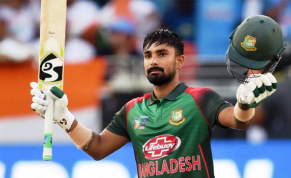
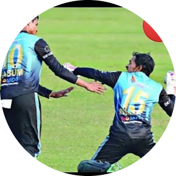
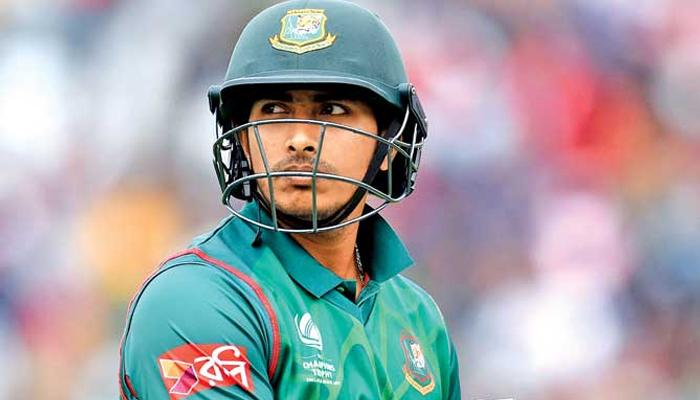

লিটন কুমার দাস (জন্ম: ১৩ অক্টোবর, ১৯৯৪) দিনাজপুরে জন্মগ্রহণকারী বাংলাদেশের উদীয়মান ক্রিকেটার। Liton Das (staff reporter) |


খুলনার শেখ আবু নাসের স্টেডিয়ামে রাজশাহী ডিভিশনের বিপক্ষে মাঠে নেমেছে স্বাগতিক খুলনা। Musfiqur Rahim (staff reporter) |